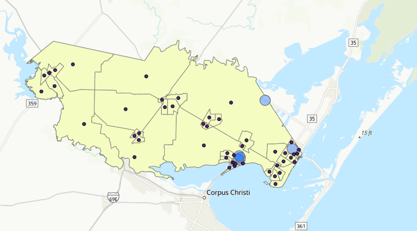
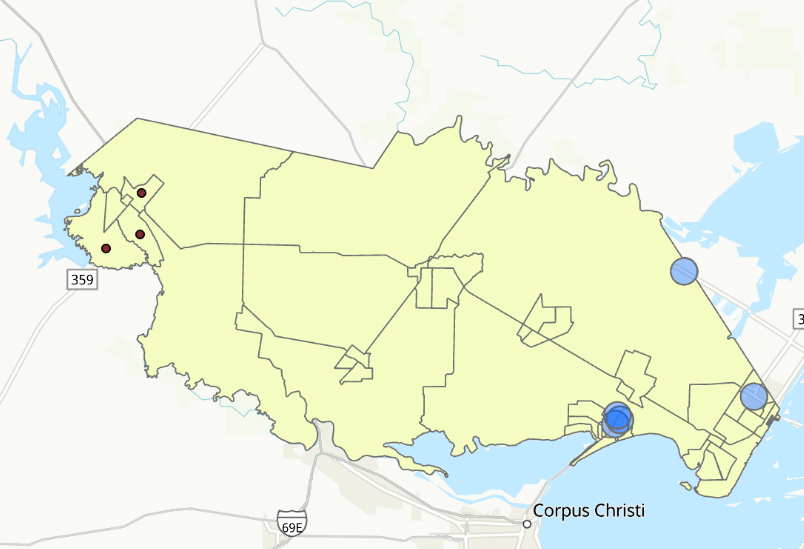
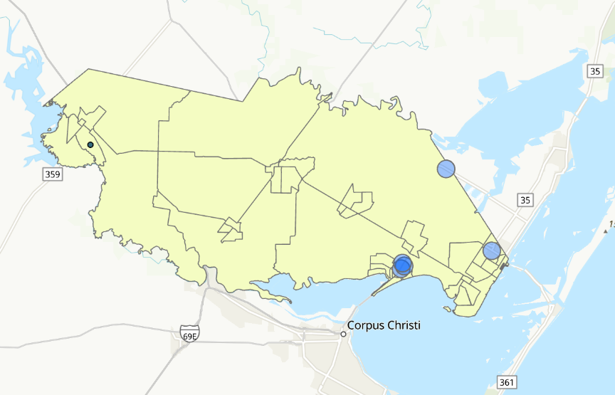

Problem
Roughly 12.5% of Texas is considered a food desert, an area without sufficient access to grocery stores, affecting both rural counties and major cities like Dallas and Houston. Our team built a custom ArcGIS Pro Python toolbox that identifies food deserts in any Texas county the user names and recommends the best locations for new grocery stores. San Patricio County is used as the worked example.
My role
Member of a seven-person team. Wrote an automated geoprocessing workflow that clips Census block groups and grocery store locations to a user-selected county. Developed a process to rank candidate sites using population density and distance to the nearest grocery store and exported the top results to a county-specific geodatabase.
Data & method
Data:
- Esri USA 2020 Census Population Characteristics — block-group polygons with
population (
P0010001) and county attributes - OSM_NA_Shops — OpenStreetMap shops for North America, filtered in a setup
notebook with
shop IN ('supermarket', 'convenience')into aGroceryStoresfeature class
Method (arcpy Python toolbox):
- Takes a single input, the county name (e.g.
San Patricio County), and writes all results to a per-county output geodatabase. - Clipped block groups and grocery stores to the county with
arcpy.analysis.Clip. - Buffered every store by 1.6 km (the standard food-desert radius) with
arcpy.analysis.Buffer, then usedarcpy.analysis.Eraseto remove the buffers from the county and leave the food-desert area. - Generated block-group centroids with
arcpy.management.FeatureToPoint. - Calculated population density (people per km²) and the distance from each centroid to
the nearest store with
arcpy.analysis.GenerateNearTable. - Computed an urgency score as
distance × population density, so the highest scores are dense block groups far from any store. - Exported three candidate layers: every food-desert block group, the top 3 by score, and the single top-scoring site.
Results
In San Patricio County, the three highest-scoring sites all fall in Mathis. The largest clusters of underserved block groups sit along the coast around Ingleside and Aransas Pass, with lower-priority rural gaps between the county's towns.
Known limitations: the score uses only density and straight-line distance (no income, vehicle access, or road-network travel time), and the tool runs one county at a time.
Figures
Tool output for San Patricio County, showing the food-desert block groups, 1.6 km store buffers, and each candidate layer.



Links
- GitHub repository (toolbox, notebook, and project package)